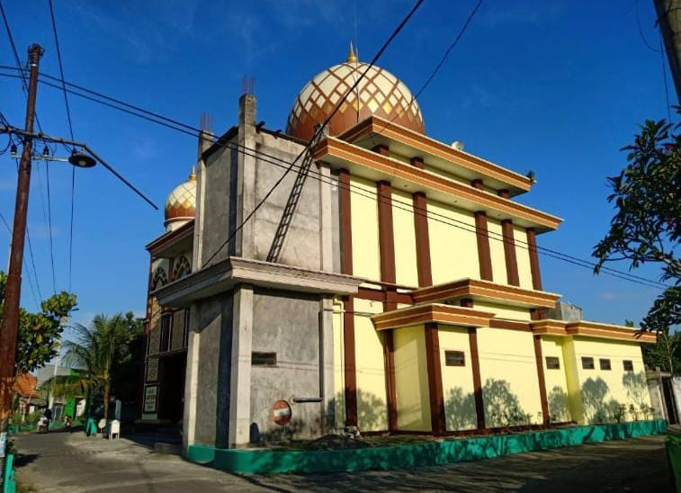
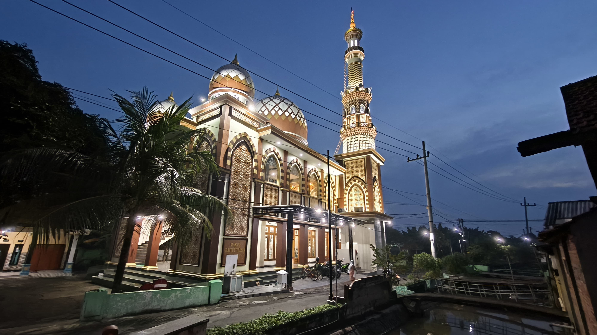
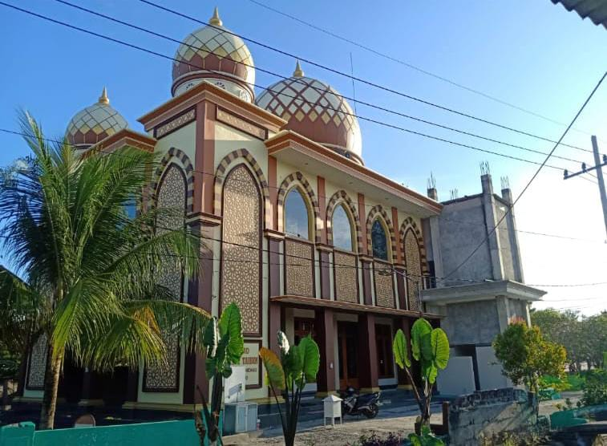
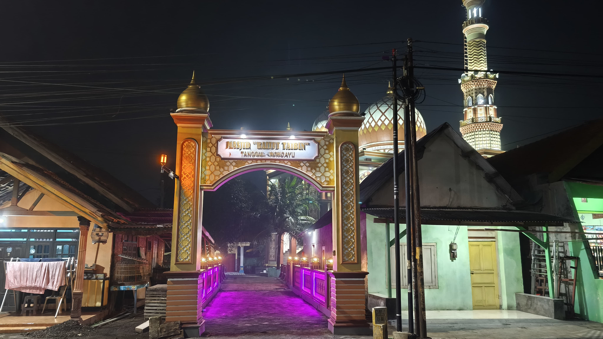

 <link rel="stylesheet" href="css/style.css" />

<section>
  <h1 data-aos-delay="fade-up">Selamat Datang di Masjid Baitut Taibin</h1>

  <!-- Tentang Kami -->
  <article>
    <h2>Tentang Kami</h2>
    <p>
      Berawal dari sebuah Musholla kecil di Kampung Tengah-Tengah Sidoarjo,
      Masjid Baitul taibin terus berusaha membangun Ummat dan Mensejahterakan
      Masyarakat.
    </p>
  </article>

  <!-- Sejarah Masjid -->

  <!-- Foto Masjid & Kegiatan -->
  <article>
    <h2>Foto Masjid dan Kegiatan</h2>
    <div class="gallery-foto">
      
      
      
      
    </div>
  </article>

  <!-- Alamat Masjid -->
  <article>
    <h2>Alamat Masjid</h2>
    <p>
      Tanggul Kidul, Tanggul, Kec. Wonoayu, Kabupaten Sidoarjo, Jawa Timur 61261
    </p>
  </article>

  <!-- Sosial Media -->
  <article class="social-media">
    <h2>Sosial Media</h2>
    <ul>
      <li>
        
        <a
          href="https://facebook.com/masjidbaitultaibin"
          target="_blank"
          rel="noopener noreferrer"
          >Facebook</a
        >
      </li>
      <li>
        
        <a
          href="https://instagram.com/masjidbaitultaibin"
          target="_blank"
          rel="noopener noreferrer"
          >Instagram</a
        >
      </li>
      <li>
        
        <a
          href="https://youtube.com/@masjidbaitultaibin"
          target="_blank"
          rel="noopener noreferrer">YouTube</a>
      </li>
    </ul>
  </article>
</section>
